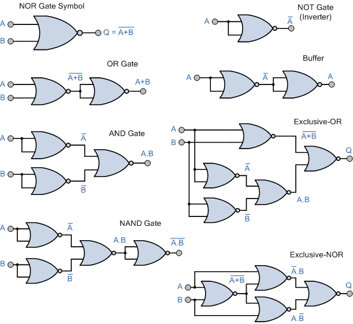

DiVincenzo's Criteria 1
In the previous section, we identified the criteria required for qubits. Now we move onto those necessary to construct a Quantum Computer.
These criteria were proposed in 2000 by physicist David P. DiVincenzo. The end-goal is to have a Quantum Computer capable of performing the quantum simulations needed for the Quantum Many-Body Problem as well as executing Quantum Algorithms.
There are seven criteria in total, the first five focus solely on the computational nature of the machine itself. The other two do with the transmission of information through qubits.
These criteria are as follows:
- A scalable physical system with well characterized qubit
- The ability to initialize the state of the qubits to a simple fiducial state
- Long relevant decoherence times
- A "universal" set of quantum gates
- A qubit-specific measurement capability
With the remaining two being:
- The ability to interconvert stationary and flying qubits
- The ability to faithfully transmit flying qubits between specified locations
Let's go ahead and break down some of these criteria.
Scalable Physical System with Well Characterized Qubit
A well-characterized qubit is one with a well-defined Hamiltonian, the Hamiltonian being a a function that can tell you the energy (given as the sum of Potential and Kinetic Energies) when the qubit is in a certain configuration.
A scalable physical system means that not only should we have the ability to control one qubit, but many, many more. This is one of the greater challenges most QC platforms face because linearly increasing the number of qubits often results in an exponential increase in the experimental setup which renders any speed-up moot.
Initialize the State of Qubits to a Simple Fiducial State
Prior to executing a computation, the qubits should be in a well defined state. Usually, most platforms tend for the lowest energy state (accepted to be equivalent to \(0\) in classical computation) however, it can be any arbitrary state so long as it is well defined.
Long Relevant Decoherence Times
In the section on qubits, we mentioned that a constant problem Quantum Computers must deal with is prevent qubits from decohering, causing data loss and introducing error to computations.
We want the time to decoherence to be long enough so that we can perform useful operations on the qubit.
A "Universal" Set of Quantum Gates
In classical computing, it's possible to have a gate or set of gates that can, in turn, create any other possible configuration of gates.
Take for example, the NOR gate below:

Source: Universal Logic Gates and Complete Sets
Combining multiple NOR gates makes it possible to achieve any other desired set of gates.We want the same property in Quantum Computing, having a set of gates that can be used to create any other set of gates. This is particularly useful because it allows us to take existing Quantum Algorithms and "translate" them into a form more suitable for physical implementation or at the very least, into the operations we can currently perform.
However, this proves to be a bit problematic considering that the superposition mentioned before is an infinite spectrum between \(1\) and \(0\), making exact gate set by gate set simulation impossible.
It is possible however, to have a set of gates simulate another set with an extremely good approximation. This is a result of the Solovay-Kitaev Theorem which shows that you can take any desired qubit operation and decompose it into a sequence of gates to approximate it. 2
Qubit Specific Measurement Capability
After performing a computation, you want to obtain the state of the qubit which should be your result. The Quantum Computer in question should be able to obtain this information accurately.
Ability to Interconvert Stationary and Flying Qubits
A stationary qubit is one that remains in the Quantum Computer that generated while a flying qubit is one that can be transmitted back and forth between Quantum Computers.
Converting between them should allow information to be reliably sent and received without fear of decoherence, which falls into the last criteria of The ability to faithfully transmit flying qubits between specified locations.
Progress in these areas has been an ongoing challenge, especially considering that decoherence inevitably happens in any environment outside of the Quantum Computer's control.